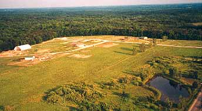

GREEN PASTURES LOG LODGE
For sale with 5 to 51 acres

Down on the farm, sited on a hilltop,
looking out over a very special little corner of the world, sits
Green Pastures Log Lodge. The views are private, verdant and pastoral
- fields and forest, flora and fauna, big skies, peace on a piece
of earth. Our 51 acres is surrounded by about 800 acres of old growth
woods, so very private – however just ½ mile to exit
41 on I-196. This translates to less than 5 minutes to Saugatuck,
10 minutes to Holland, 40 minutes to downtown Grand Rapids, with
Chicago and Detroit less than three hours away. Location, location,
location!
Long wide porches on 3 sides are great spots for outdoor living, dining,
and cooking. I can personally recommend a rope swing on the south porch.
Life is very good here. The lodge has been rented out at $500 per night/$2500
per week, sleeping up to 16 guests. It is comprised of 3 levels and 3 master
suites, with a total of 2532 sf. If I had the energy to market
it, it would be great for reunions, retreats, wedding groups and such.
There is also an attached summer efficiency apartment, separate and private,
480 sf, sleeping four. This could probably be rented for $750 per week,
in season. Between the apartment and lodge is a three stall garage measuring
40' x 24' .
The property is zoned Ag, with a special use permit approved and permanent
for the east 34 of those acres. The west front 17 acres, including a pond,
is mostly in pasture, with an especially good alfalfa field on the south
portion. The special use permit is
for “a private social facility with various outdoor activities, including
horse stables, horseback rides, non-alcohol related group picnicking and
social events and hiking trails.” Additional details are available
upon request for an interested party.
This property is for sale, all or part. If it were divided, logically there
could be:
- Wedding Gazebo Area with 5+ acres opulently wooded with a spot by the ravine for a custom residence.
-
Log Lodge with 5+ acres which could possibly
include a 40 x 40 horse barn.
This acreage has a special use permit for horseback riding, boarding and more. - 60' x 100' Pavilion with restrooms next to “Pixie Lane Enchanted Forest”, with acreage and wooded ravine/creek frontage negotiable. We have held company picnics, church groups and receptions here in the past.
- Northern Wooded Ravine/Creek Frontage with a 24' x 24' small barn and acreage negotiable. Special use permit would allow a variety of public activities.
- South Pasture fringed with woods and including a stone and bark Chatres style labyrinth. This area would adapt nicely to a retreat/residence.
- Front 17 Acres with Pond and Road Frontage could be divided into up to six 2-½ acre residential parcels with no special use permits included. Covenants would be required.